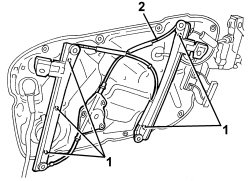
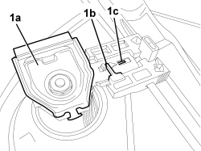
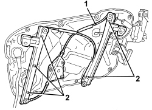

7005M27 ELECTRIC WINDOW MECHANISM FOR ONE FRONT DOOR LH OR RH - R.R WITH SUPPORT FRAME REMOVED
- Path
- Procedures > 70 FITTINGS > 7005 PASSENGER COMPARTMENT FRONT SIDE DOORS > 7005M FRONT ELECTRIC WINDOWS > 7005M27 ELECTRIC WINDOW MECHANISM FOR ONE FRONT DOOR LH OR RH - R.R WITH SUPPORT FRAME REMOVED
- Kind
- repair procedure (removal / refitting; the operation number is the code)
- Applies to
- all engines; all production periods
- Interactive page
- https://sloeber94.github.io/elrnDB/#/939011141
Applies to: all engines; all production periods
 Removing
Removing
 Refitting
RefittingOp. 5505A43 CONTROL UNIT (DIGITAL NETWORK NODE) IN DRIVER'S DOOR - R.R. WITH PANEL REMOVED
- mark the position of the window opening mechanism and the window retainers to prevent incorrect fitting.
1. Loosen the nuts fixing the window opening mechanism (located on the opposite side).
2. Remove the window opening mechanism.

Applies to: all engines; all production periods
1. If necessary, remove the window retainer(s) (1a), releasing retainers (1b) and (1c) carefully.

Applies to: all engines; all production periods
Refitting
Removing- Check that the window opening mechanism is not damaged.
- If the window retainer(s) is(are) removed, refit them attaching them carefully and checking the marks made during the removal.

Applies to: all engines; all production periods
1. Position the window opening mechanism.
2. Secure the mechanism using nuts.
Op. 5505A43 CONTROL UNIT (DIGITAL NETWORK NODE) IN DRIVER'S DOOR - R.R. WITH PANEL REMOVED
Topics linked from this page (2)
- 5505A43 CONTROL UNIT (DIGITAL NETWORK NODE) IN DRIVER'S DOOR - R.R. WITH PANEL REMOVED
- 7005M28 FRONT SIDE DOOR ELECTRICALLY OPERATED WINDOW MOTOR - R.R. WITH DOOR PANEL/SUPPORT FRAME REMOVED